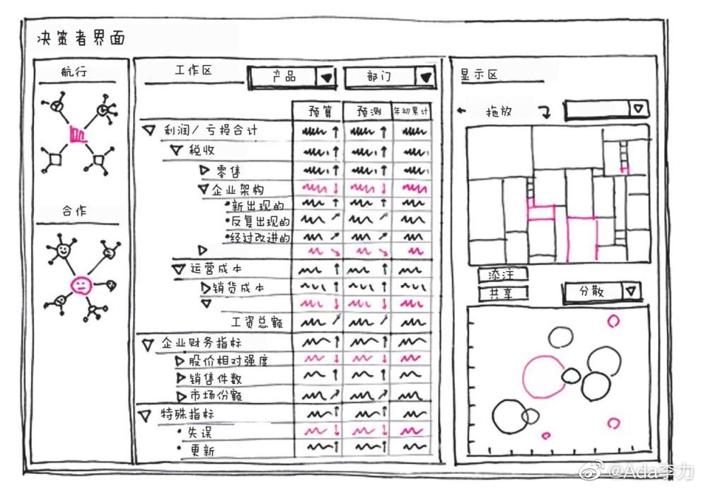

#创业#《一页纸工作整理术》书里这段话，让我笑出声来。
"总结会开始了，我们向公司高管们展示白板，这个时候有趣的事发生了——每个人都马上明白了我们所展示的内容。我还是头一次遇到这种情况。没人抱怨我们用错了字体，没人质疑我们对颜色的选择，没人质疑图中数据的准确性等。
会议结束时，微软两位高管对我说：“我们很喜欢这种开会方式，主要是因为你们的图太棒了。你们用的是什么画图软件？”
这些图很明显是手绘的。我想也许他们是在开玩笑吧，所以也幽默了一下：“我用的是‘智能大脑1. 0’、‘纸和笔1. 0’。”两人竟异口同声地问：“软件开发者是谁？”
"
我笑的原因是自己做为前IT行业里做软件产品的程序员，也会是同样反应，看到绘制得不错界面，先问是什么工具做的。
而再细想，这是典型的因为手里有锤子，所以看什么都是钉子的思维惯性。如果没有锤子，可能人就会更多需要调用自己的大脑了。有时候，工具或者资源，对人自身是一种限制。
"总结会开始了，我们向公司高管们展示白板，这个时候有趣的事发生了——每个人都马上明白了我们所展示的内容。我还是头一次遇到这种情况。没人抱怨我们用错了字体，没人质疑我们对颜色的选择，没人质疑图中数据的准确性等。
会议结束时，微软两位高管对我说：“我们很喜欢这种开会方式，主要是因为你们的图太棒了。你们用的是什么画图软件？”
这些图很明显是手绘的。我想也许他们是在开玩笑吧，所以也幽默了一下：“我用的是‘智能大脑1. 0’、‘纸和笔1. 0’。”两人竟异口同声地问：“软件开发者是谁？”
"
我笑的原因是自己做为前IT行业里做软件产品的程序员，也会是同样反应，看到绘制得不错界面，先问是什么工具做的。
而再细想，这是典型的因为手里有锤子，所以看什么都是钉子的思维惯性。如果没有锤子，可能人就会更多需要调用自己的大脑了。有时候，工具或者资源，对人自身是一种限制。
- 